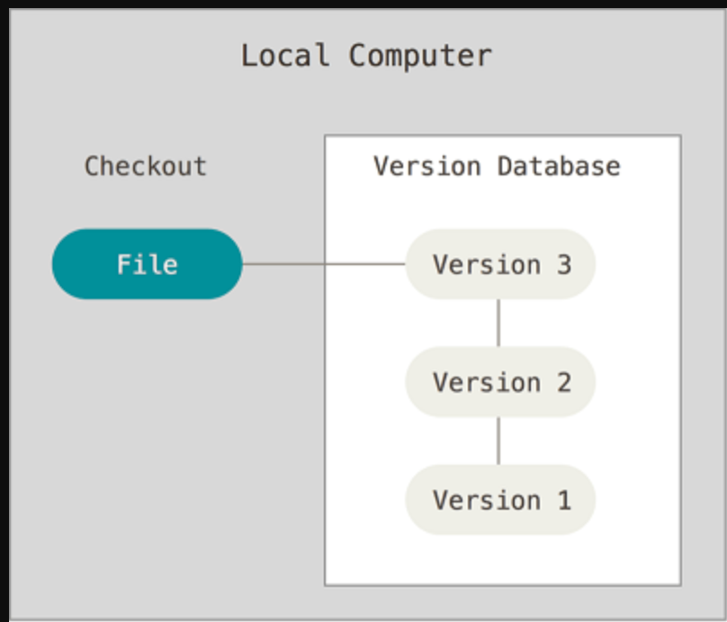
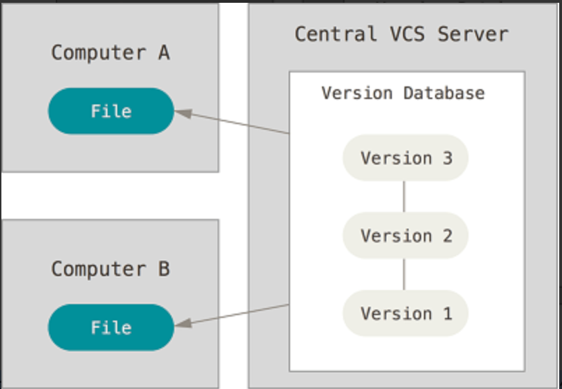
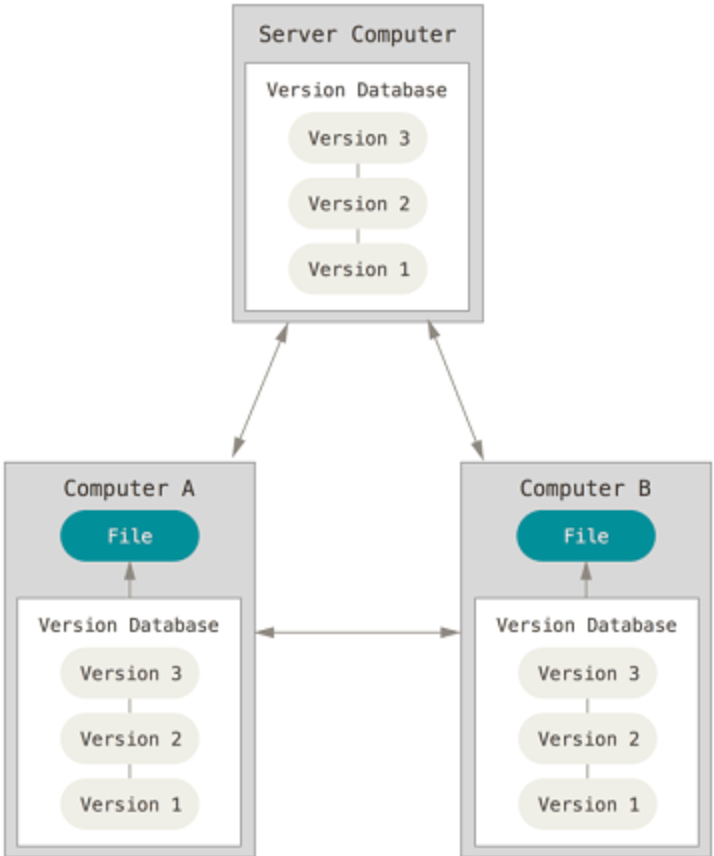
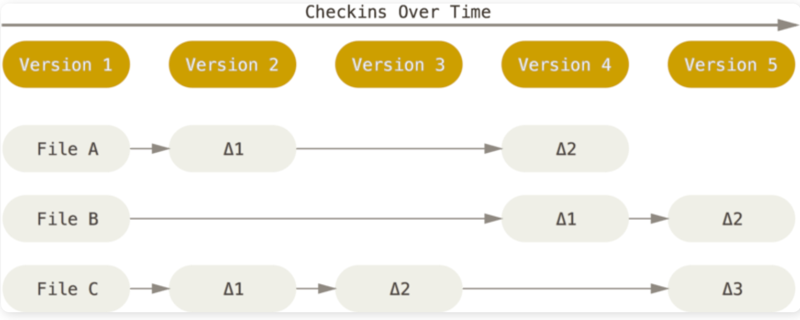
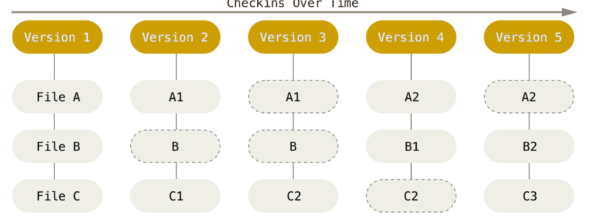
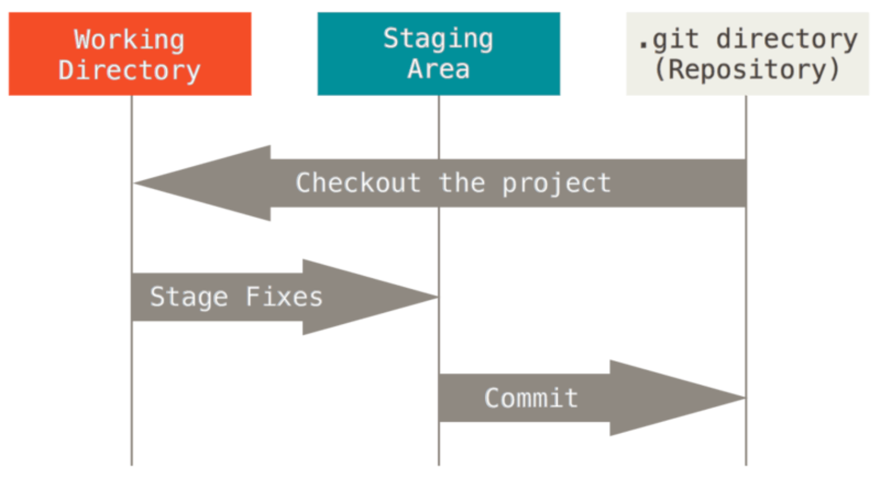

版本控制什么是版本控制为什么要版本控制本地版本控制系统集中化的版本控制系统分布式版本控制系统认识 GitGit 简史Git 与其他版本管理系统的主要区别Git 的三种状态常用指令获取 Git 仓库记录每次更新到仓库推送改动到远程仓库远程仓库的移除与重命名查看提交历史撤销操作分支参考资料
版本控制是一种记录一个或若干文件内容变化，以便将来查阅特定版本修订情况的系统。 除了项目源代码，你可以对任何类型的文件进行版本控制。
有了它你就可以将某个文件回溯到之前的状态，甚至将整个项目都回退到过去某个时间点的状态，你可以比较文件的变化细节，查出最后是谁修改了哪个地方，从而找出导致怪异问题出现的原因，又是谁在何时报告了某个功能缺陷等等。
许多人习惯用复制整个项目目录的方式来保存不同的版本，或许还会改名加上备份时间以示区别。 这么做唯一的好处就是简单，但是特别容易犯错。 有时候会混淆所在的工作目录，一不小心会写错文件或者覆盖意想外的文件。
为了解决这个问题，人们很久以前就开发了许多种本地版本控制系统，大多都是采用某种简单的数据库来记录文件的历次更新差异。

接下来人们又遇到一个问题，如何让在不同系统上的开发者协同工作？ 于是，集中化的版本控制系统（Centralized Version Control Systems，简称 CVCS）应运而生。
集中化的版本控制系统都有一个单一的集中管理的服务器，保存所有文件的修订版本，而协同工作的人们都通过客户端连到这台服务器，取出最新的文件或者提交更新。

这么做虽然解决了本地版本控制系统无法让在不同系统上的开发者协同工作的诟病，但也还是存在下面的问题：
单点故障： 中央服务器宕机，则其他人无法使用；如果中心数据库磁盘损坏又没有进行备份，你将丢失所有数据。本地版本控制系统也存在类似问题，只要整个项目的历史记录被保存在单一位置，就有丢失所有历史更新记录的风险。
必须联网才能工作： 受网络状况、带宽影响。
于是分布式版本控制系统（Distributed Version Control System，简称 DVCS）面世了。 Git 就是一个典型的分布式版本控制系统。
这类系统，客户端并不只提取最新版本的文件快照，而是把代码仓库完整地镜像下来。 这么一来，任何一处协同工作用的服务器发生故障，事后都可以用任何一个镜像出来的本地仓库恢复。 因为每一次的克隆操作，实际上都是一次对代码仓库的完整备份。
分布式版本控制系统可以不用联网就可以工作，因为每个人的电脑上都是完整的版本库，当你修改了某个文件后，你只需要将自己的修改推送给别人就可以了。但是，在实际使用分布式版本控制系统的时候，很少会直接进行推送修改，而是使用一台充当“中央服务器”的东西。这个服务器的作用仅仅是用来方便“交换”大家的修改，没有它大家也一样干活，只是交换修改不方便而已。
分布式版本控制系统的优势不单是不必联网这么简单，后面我们还会看到 Git 极其强大的分支管理等功能。
Linux 内核项目组当时使用分布式版本控制系统 BitKeeper 来管理和维护代码。但是，后来开发 BitKeeper 的商业公司同 Linux 内核开源社区的合作关系结束，他们收回了 Linux 内核社区免费使用 BitKeeper 的权力。 Linux 开源社区（特别是 Linux 的缔造者 Linus Torvalds）基于使用 BitKeeper 时的经验教训，开发出自己的版本系统，而且对新的版本控制系统做了很多改进。
Git 在保存和对待各种信息的时候与其它版本控制系统有很大差异，尽管操作起来的命令形式非常相近，理解这些差异将有助于防止你使用中的困惑。
下面我们主要说一个关于 Git 与其他版本管理系统的主要差别：对待数据的方式。
Git 采用的是直接记录快照的方式，而非差异比较。我后面会详细介绍这两种方式的差别。
大部分版本控制系统（CVS、Subversion、Perforce、Bazaar 等等）都是以文件变更列表的方式存储信息，这类系统将它们保存的信息看作是一组基本文件和每个文件随时间逐步累积的差异。
具体原理如下图所示，理解起来其实很简单，每当我们提交更新一个文件之后，系统都会记录这个文件做了哪些更新，以增量符号 Δ(Delta)表示。

我们怎样才能得到一个文件的最终版本呢？
很简单，高中数学的基本知识，我们只需要将这些原文件和这些增加进行相加就行了。
这种方式有什么问题呢？
比如我们的增量特别特别多的话，如果我们要得到最终的文件是不是会耗费时间和性能。
Git 不按照以上方式对待或保存数据。 反之，Git 更像是把数据看作是对小型文件系统的一组快照。 每次你提交更新，或在 Git 中保存项目状态时，它主要对当时的全部文件制作一个快照并保存这个快照的索引。 为了高效，如果文件没有修改，Git 不再重新存储该文件，而是只保留一个链接指向之前存储的文件。 Git 对待数据更像是一个 快照流。

Git 有三种状态，你的文件可能处于其中之一：
已提交（committed）：数据已经安全的保存在本地数据库中。
已修改（modified）：已修改表示修改了文件，但还没保存到数据库中。
已暂存（staged）：表示对一个已修改文件的当前版本做了标记，使之包含在下次提交的快照中。
由此引入 Git 项目的三个工作区域的概念：Git 仓库(.git directory)、工作目录(Working Directory) 以及 暂存区域(Staging Area)

基本的 Git 工作流程如下：
在工作目录中修改文件。
暂存文件，将文件的快照放入暂存区域。
提交更新，找到暂存区域的文件，将快照永久性存储到 Git 仓库目录。
有两种取得 Git 项目仓库的方法。
在现有目录中初始化仓库: 进入项目目录运行 git init 命令,该命令将创建一个名为 .git 的子目录。
从一个服务器克隆一个现有的 Git 仓库: git clone [url] 自定义本地仓库的名字: git clone [url] directoryname
检测当前文件状态 : git status
提出更改（把它们添加到暂存区）：git add filename (针对特定文件)、git add *(所有文件)、git add *.txt（支持通配符，所有 .txt 文件）
忽略文件：.gitignore 文件
提交更新: git commit -m "代码提交信息" （每次准备提交前，先用 git status 看下，是不是都已暂存起来了， 然后再运行提交命令 git commit）
跳过使用暂存区域更新的方式 : git commit -a -m "代码提交信息"。 git commit 加上 -a 选项，Git 就会自动把所有已经跟踪过的文件暂存起来一并提交，从而跳过 git add 步骤。
移除文件：git rm filename （从暂存区域移除，然后提交。）
对文件重命名：git mv README.md README(这个命令相当于mv README.md README、git rm README.md、git add README 这三条命令的集合
如果你还没有克隆现有仓库，并欲将你的仓库连接到某个远程服务器，你可以使用如下命令添加：git remote add origin <server> ,比如我们要让本地的一个仓库和 GitHub 上创建的一个仓库关联可以这样git remote add origin https://github.com/Snailclimb/test.git
关联后，使用命令git push -u origin master第一次推送master分支的所有内容；此后，每次本地提交后，只要有必要，就可以使用命令git push origin master推送最新修改
将 test 重命名为 test1：git remote rename test test1
移除远程仓库 test1:git remote rm test1
在提交了若干更新，又或者克隆了某个项目之后，你也许想回顾下提交历史。 完成这个任务最简单而又有效的工具是 git log 命令。git log 会按提交时间列出所有的更新，最近的更新排在最上面。
可以添加一些参数来查看自己希望看到的内容：
只看某个人的提交记录 git log --author=bob
场景1 ：有时候我们提交完了才发现漏掉了几个文件没有添加，或者提交信息写错了。 此时，可以运行带有 --amend 选项的提交命令尝试重新提交：git commit --amend
场景2：当你改乱了工作区某个文件的内容，想直接丢弃工作区的修改时， git checkout -- filename
场景3：当你不但改乱了工作区某个文件的内容，还添加到了暂存区时，想丢弃修改，分两步，第一步用命令git reset HEAD <file>，就回到了场景1，第二步按场景1操作。git reset命令既可以回退版本，也可以把暂存区的修改回退到工作区。当我们用HEAD时，表示最新的版本。
场景4: 假如你想丢弃你在本地的所有改动与提交，可以到服务器上获取最新的版本历史，并将你本地主分支指向它：git fetch origin
git reset --hard origin/master
分支是用来将特性开发绝缘开来的。在你创建仓库的时候，master 是“默认”的分支。在其他分支上进行开发，完成后再将它们合并到主分支上。
创建一个名字叫做 test 的分支: git branch test
查看分支：git branch
切换当前分支到 test： git checkout test
当你切换分支的时候，Git 会重置你的工作目录，使其看起来像回到了你在那个分支上最后一次提交的样子。 Git 会自动添加、删除、修改文件以确保此时你的工作目录和这个分支最后一次提交时的样子一模一样)
创建+切换分支：git checkout -b <name>或者git switch -c <name>
合并分支(可能会有冲突): git merge test
把新建的分支删掉: git branch -d feature_x
当手头工作没有完成时，先把工作现场git stash一下，然后去修复bug，修复后，再git stash pop，回到工作现场；
在master分支上修复的bug，想要合并到当前dev分支，可以用git cherry-pick <commit>命令，把bug提交的修改“复制”到当前分支，避免重复劳动。
远程分支
查看远程库信息，使用git remote -v；
从本地推送分支，使用git push origin branch-name，如果推送失败，先用git pull抓取远程的新提交；
在本地创建和远程分支对应的分支，使用git checkout -b branch-name origin/branch-name，本地和远程分支的名称最好一致；
建立本地分支和远程分支的关联，使用git branch --set-upstream branch-name origin/branch-name；
从远程抓取分支，使用git pull，如果有冲突，要先处理冲突。